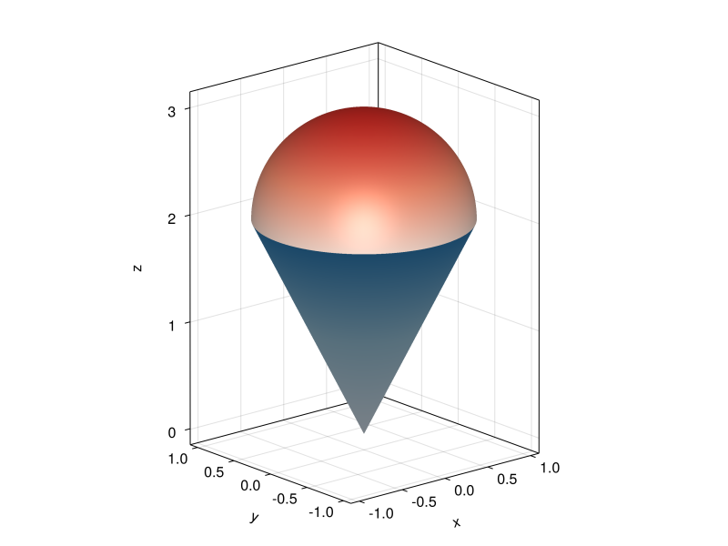

7 2023-12-22
Examen de Análisis III
Ejercicio 7.1 La función de producción de una empresa de circuitos para teléfonos móviles está dada por \(f(k,l) = 50k^{3/4}l^{1/4}\), donde \(k\) son las unidades de capital invertidas y \(l\) son las horas de mano de obra. Si el coste cada unidad de capital es 200€ y el de cada hora trabajada 50€, calcular la máxima producción si el coste total no puede exceder los 40000€.
La función de coste es \(c(k,l) = 200k+50l\) y debe cumplirse que \(c(k,l)\leq 40000\), por lo que se trata de un problema de optimización con restricciones. Si aplicamos el método de los multiplicadores de Lagrange, debe cumplirse
\[ \begin{gathered} \nabla f(k,l) = \lambda\nabla c(k,l)\\ c(k,l) = 40000 \end{gathered} \]
Si calculamos los gradientes de \(f\) y \(c\) se tiene
\[\begin{align*} \nabla f(k,l) &= \left(50\frac{3}{4}k^{-1/4}l^{1/4}, 50k^{3/4}\frac{1}{4}l^{-3/4}\right) \\ \nabla c(k,l) &= (200, 50) \end{align*}\]
Por tanto, se debe cumplir
\[ \begin{gathered} \left(50\frac{3}{4}k^{-1/4}l^{1/4}, 50k^{3/4}\frac{1}{4}l^{-3/4}\right) = \lambda(200, 50) \\ \Leftrightarrow \frac{50\cdot 3l^{1/4}}{200\cdot 4 k^{1/4}} = \frac{50 k^{3/4}}{50\cdot 4l^{3/4}} \\ \Leftrightarrow \frac{3l^{1/4}}{16k^{1/4}} = \frac{k^{3/4}}{4l^{3/4}} \\ \Leftrightarrow l = \frac{4}{3}k. \end{gathered} \]
Imponiendo ahora la restricción, se tiene
\[ c\left(k,\frac{4}{3}k\right) = 200k+50\frac{4}{3}k = \frac{800}{3}k = 40000 \Leftrightarrow k = 150, \]
y sustituyendo en la expresión anterior de \(l\) se tiene \(l=\frac{4}{3}150 = 200\).
Por tanto, la máxima producción se obtendrá para 200 unidades de capital y 150 horas de trabajo.
Ejercicio 7.2 Calcular los polinomios de Taylor de segundo grado de la función \(f(x,y)=\cos(x)\operatorname{sen}(y)\) en los puntos \((0,\pi/2)\), \((\pi/2,0)\) y \((\pi,\pi/2)\), Justificar, en función del término cuadrático del polinomio si la función tiene un máximo relativo, un mínimo relativo o un punto de inflexión en cada uno de estos puntos.
La fórmula del polinomio de Taylor de segundo grado de la función \(f\) en el punto \((a,b)\) es
\[\begin{align*} P^2_{f,(a,b)}(x,y) &= f(a,b) + f'_x(a,b)(x-a) + f'_y(a,b)(y-b) \\ &+ \frac{1}{2}\left(f''_{xx}(x-a)^2 + 2f''_{xy}(a,b)(x-a)(y-b) + f''_{yy}(a,b)(y-b)^2\right), \end{align*}\]
por lo que necesitamos calcular hasta las derivadas parciales de segundo orden.
\[\begin{align*} f(x,y) &= \cos(x)\operatorname{sen}(y)\\ f'_x(x,y) &= -\operatorname{sen}(x)\operatorname{sen}(y) \\ f'_y(x,y) &= \cos(x)\cos(y) \\ f''_{xx} &= -\cos(x)\operatorname{sen}(y) \\ f''_{xy} &= -\operatorname{sen}(x)\cos(y) \\ f''_{yx} &= -\operatorname{sen}(x)\cos(y) \\ f''_{yy} &= -\cos(x)\operatorname{sen}(y) \end{align*}\]
A continuación calculamos el valor de estas derivadas en los puntos que nos dan
| Función | \((0,\pi/2)\) | \((\pi/2,0)\) | \((\pi,\pi/2)\) |
|---|---|---|---|
| \(f(a,b)\) | 1 | 0 | -1 |
| \(f'_x(a,b)\) | 0 | 0 | 0 |
| \(f'_y(a,b)\) | 0 | 0 | 0 |
| \(f''_{xx}(a,b)\) | -1 | 0 | 1 |
| \(f''_{xy}(a,b)\) | 0 | -1 | 0 |
| \(f''_{xx}(a,b)\) | -1 | 0 | 1 |
Así pues, sustituyendo la fórmula del polinomio de Taylor se tiene
\[\begin{align*} P^2_{f,(0,\pi/2)}(x,y) &= 1 + \frac{1}{2}(-x^2 - (y-\pi/2)^2) = 1 - \frac{1}{2}(x^2 + (y-\pi/2)^2) \\ P^2_{f,(\pi/2, 0)}(x,y) &= -(x-\pi/2)y \\ P^2_{f,(\pi,\pi/2)}(x,y) &= -1 + \frac{1}{2}((x-\pi) + (y-\pi/2)^2). \end{align*}\]
Como se puede observar, el término de grado 1 de todos los polinomios se anula, ya que todos los puntos son puntos críticos de \(f\). Como el primer término del polinomio es el valor de la función en el punto \(f(a,b)\), podemos estudiar si se trata de extremos o puntos de silla observando el signo del término de grado dos del polinomio.
En el caso del punto \((0,\pi/2)\), el término cuadrático es \(- \frac{1}{2}(x^2 + (y-\pi/2)^2)\) que resulta ser negativo para cualquier valor de \(x\) e \(y\), por lo que en cualquier punto de un entorno de este punto el valor de la función será menor que \(f(0,\pi/2)\), y en consecuencia, en \((0,\pi/2)\) hay un máximo relativo.
En el caso del punto \((\pi/2,0)\), el término cuadrático es \(-(x-\pi/2)y\) que puede ser positivo o negativo dependiendo de los valores de \(x\) e \(y\), por lo que habrá puntos en el entorno de \((\pi/2,0)\) donde la función tome valores mayores que \(f(0,\pi/2)\), y puntos donde tome valores menores, y en consecuencia, en \((0,\pi/2)\) hay un punto de silla.
Finalmente, en el caso del punto \((\pi,\pi/2)\), el término cuadrático es \(\frac{1}{2}((x-\pi) + (y-\pi/2)^2)\) que resulta ser positivo para cualquier valor de \(x\) e \(y\), por lo que en cualquier punto de un entorno de este punto el valor de la función será mayor que \(f(\pi,\pi/2)\), y en consecuencia, en \((\pi,\pi/2)\) hay un mínimo relativo.
Ejercicio 7.3 Calcular la integral \(\displaystyle \int_0^4\int_{\sqrt{y}}^2 \frac{1}{x^3+1}\,dx\,dy\).
Se trata de una integral racional pero resulta más sencilla si se invierte el orden de integración de las variables.
\[\begin{align*} \int_0^4\int_{\sqrt{y}}^2 \frac{1}{x^3+1}\,dx\,dy &= \int_0^2\int_0^{x^2} \frac{1}{x^3+1}\,dy\,dx = \int_0^2 \frac{1}{x^3+1} [y]_0^{x^2}\,dx \\ &= \int_0^2 \frac{x^2}{x^3+1} \,dx = \frac{1}{3}[\ln|x^3+1|]_0^2 = \frac{1}{3}\ln(9). \end{align*}\]
Ejercicio 7.4 Calcular el volumen de un helado formado por un cono de barquillo con ecuación \(4x^2+4y^2-z^2=0\) sobre el que se coloca semiesfera de ecuación \(x^2+y^2+(z-2)^2 = 1\) como se muestra en la figura. ¿Qué cantidad de barquillo se necesita para construir el cono del helado?

Despejando \(z\) de ambas ecuaciones, se tiene que la función que define el cono es \(f(x,y) = \sqrt{4x^2+4y^2} = 2\sqrt{x^2+y^2}\) y la que define la semiesfera superior es \(g(x,y) = 2 + \sqrt{1-x^2-y^2}\), de manera que el volumen del helado será el volumen comprendido entre las superficies de \(g\) y \(f\).
Para determinar la región de integración, resolvemos la ecuación que resulta de igualar las dos funciones.
\[ f(x,y) = g(x,y) \Leftrightarrow 2\sqrt{x^2+y^2} = 2 + \sqrt{1-(x^2+y^2)} \]
Haciendo el cambio \(u^2=x^2+y^2\) se tiene
\[ \begin{gathered} 2 \sqrt{u^2} = 2 + \sqrt{1-u^2} \Leftrightarrow 2u-2 = \sqrt{1-u^2} \\ \Leftrightarrow 4(u-1)^2 = 1-u^2 \\ \Leftrightarrow 4u^2-8u+4 = 1-u^2 \\ \Leftrightarrow 5u^2-8u+3 = 0 \\ \Leftrightarrow u = 3/5 \mbox{ o } u = 1. \end{gathered} \]
Deshaciendo el cambio de variable, se tiene que la primera solución es \(x^2+y^2=3/5\) y la segunda \(x^2+y^2=1\). Se observa que ambas soluciones definen una región circular centrada en el origen con radios \(\sqrt{3/5}\) y \(1\), respectivamente, ya que la esfera corta al cono en dos planos distintos, pero tomaremos la última solución que es la que se corresponde con la figura. Por tanto, la región de integración es \(R=\{(x,y)\in \mathbb{R}^2: -1\leq x\leq 1, -\sqrt{1-x^2}\leq y\leq \sqrt{1-x^2}\}\).
Por las características de las funciones y de la región de integración, resulta más sencillo hacer la integral en coordenadas polares, donde la región de integración es \(R=\{(r,\theta)\in \mathbb{R}^+\times \mathbb{R}: 0\leq \theta\leq 2\pi, 0\leq r\leq 1\}\).
\[\begin{align*} \int_R g(x,y)-f(x,y) \,dA &= \int_0^{2\pi}\int_0^1 (g(r\cos(\theta), r\operatorname{sen}(\theta)) - f(r\cos(\theta), r\operatorname{sen}(\theta)))r\,dr\,d\theta \\ &= \int_0^{2\pi}\int_0^1 (2+\sqrt{1-(r\cos(\theta))^2-(r\operatorname{sen}(\theta))^2}-2\sqrt{(r\cos(\theta))^2+(r\operatorname{sen}(\theta))^2})r\,dr\,d\theta \\ &= \int_0^{2\pi}\int_0^1 (2+\sqrt{1-r^2}-2r)r\,dr\,d\theta \\ &= \int_0^{2\pi}\int_0^1 2r+r\sqrt{1-r^2}-2r^2\,dr\,d\theta \\ &= \int_0^{2\pi} \left[r^2-\frac{(1-r^2)^{3/2}}{3}-\frac{2r^3}{3}\right]_0^1\,d\theta \\ &= \int_0^{2\pi} 1-\frac{2}{3}+\frac{1}{3}\,d\theta \\ &= \int_0^{2\pi} \frac{2}{3}\,d\theta = \frac{2}{3}[\theta]_0^{2\pi} = \frac{4\pi}{3}. \end{align*}\]
Por otro lado, para averiguar la cantidad de barquillo que se necesita para construir el cono del helado, hay que calcular el area de la superficie del cono, que viene dada por la integral
\[ \int_R \sqrt{f'_x(x,y)^2+f'_y(x,y)^2+1}\,dA, \]
donde \(R\) es la misma región de integración de antes.
Así que necesitamos calcular las derivadas parciales de \(f\).
\[\begin{align*} f'_x(x,y) &= \frac{2x}{\sqrt{x^2+y^2}} \\ f'_y(x,y) &= \frac{2y}{\sqrt{x^2+y^2}}. \end{align*}\]
Por tanto, hay que calcular la siguiente integral.
\[\begin{align*} \int_R \sqrt{f'_x(x,y)^2+f'_y(x,y)^2+1}\,dA, &= \int_{-1}^1\int_{-\sqrt{1-x^2}}^{\sqrt{1-x^2}} \sqrt{\left(\frac{2x}{\sqrt{x^2+y^2}}\right)^2 + \left(\frac{2y}{\sqrt{x^2+y^2}}\right)^2+1}\,dy\,dx \\ &= \int_{-1}^1\int_{-\sqrt{1-x^2}}^{\sqrt{1-x^2}} \sqrt{\frac{4x^2}{x^2+y^2} + \frac{4y^2}{x^2+y^2}+1}\,dy\,dx \\ &= \int_{-1}^1\int_{-\sqrt{1-x^2}}^{\sqrt{1-x^2}} \sqrt{5}\,dy\,dx \\ &= \int_0^{2\pi}\int_0^1 \sqrt{5}r\,dr\,d\theta \tag{1}\\ &= \int_0^{2\pi}\sqrt{5}\left[\frac{r^2}{2}\right]_0^1\,d\theta \\ &= \int_0^{2\pi}\frac{\sqrt{5}}{2}\,d\theta = \frac{\sqrt{5}}{2} [\theta]_0^{2\pi} = \sqrt{5}\pi. \end{align*}\] (1) Cambio a coordenadas polares.